Slotted Sheet Metal Assembly ⚙️

Industrial Sheet Metal Shelving ⚙️

Custom Sheet Metal Door ⚙️

Commercial Stainless Steel Sink ⚙️

Mechatronics Engineering at Ain Shams University | GPA: 3.1
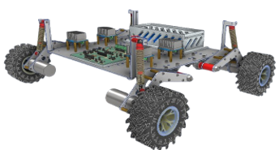
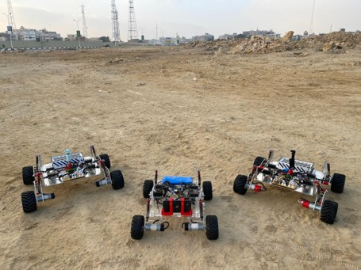
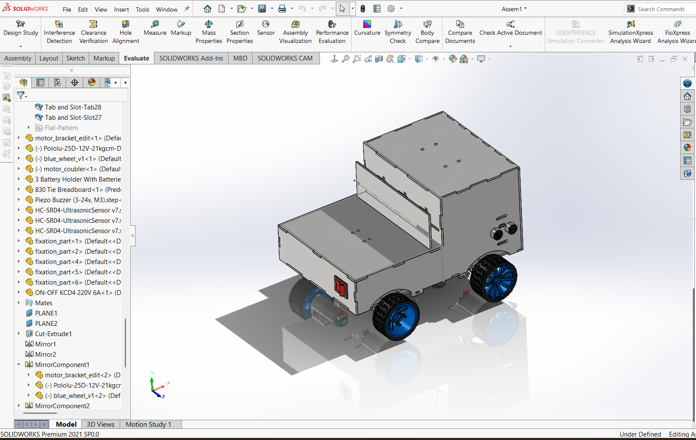
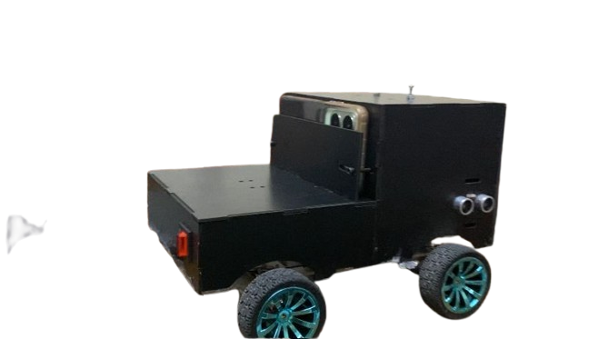
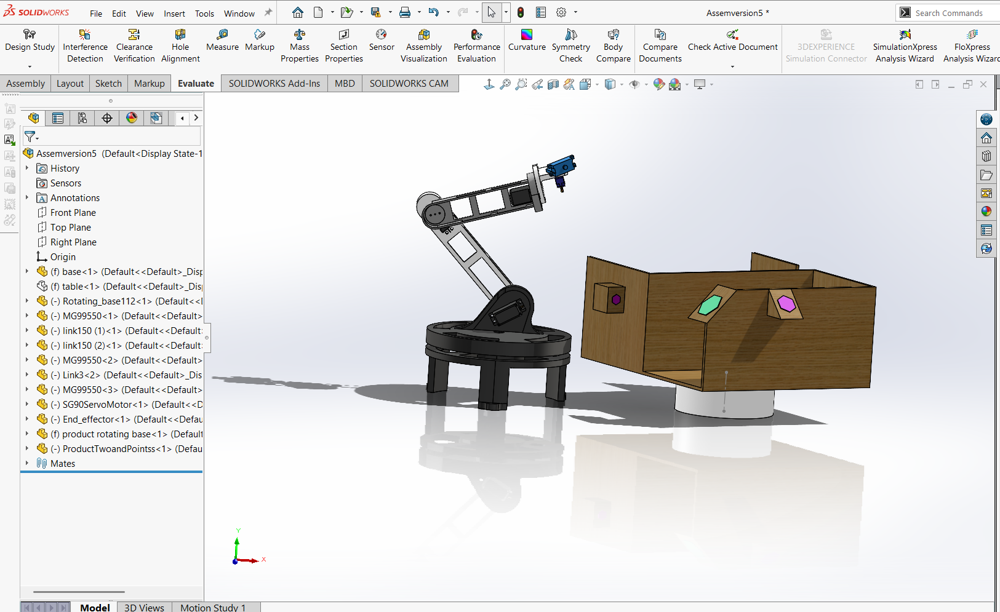
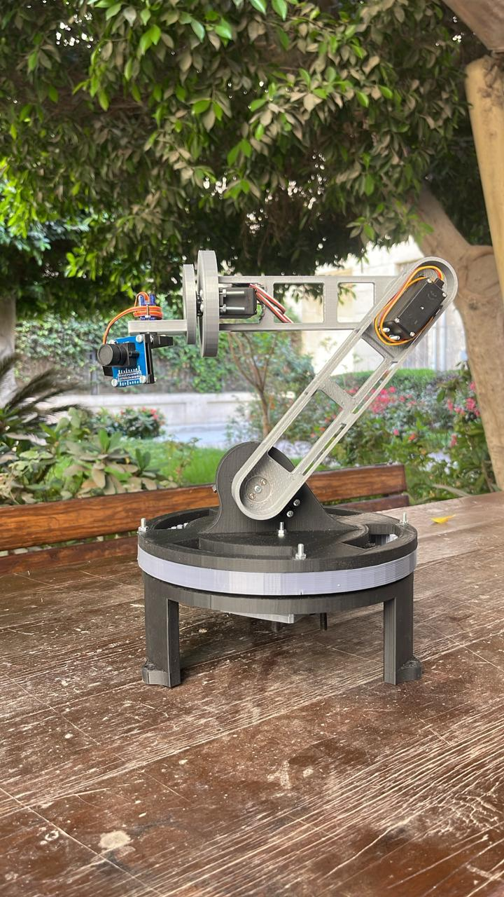
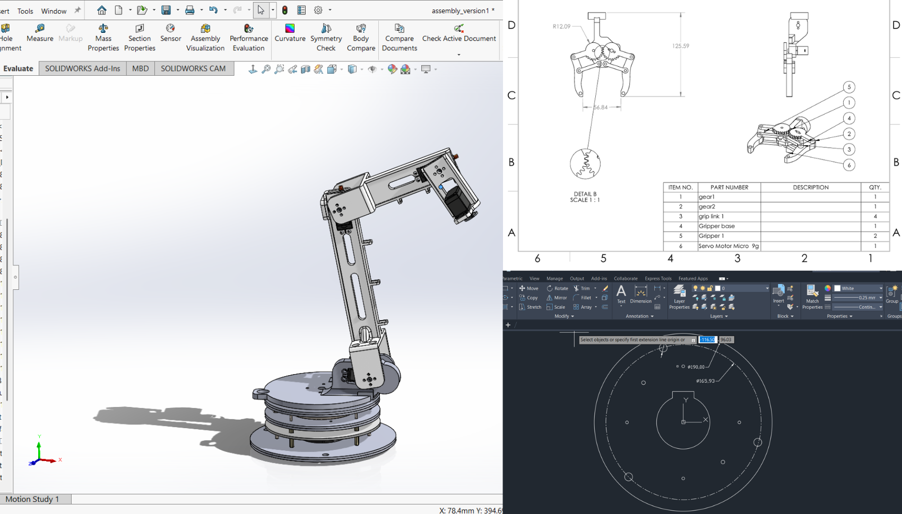
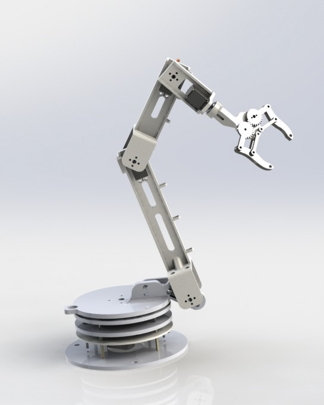
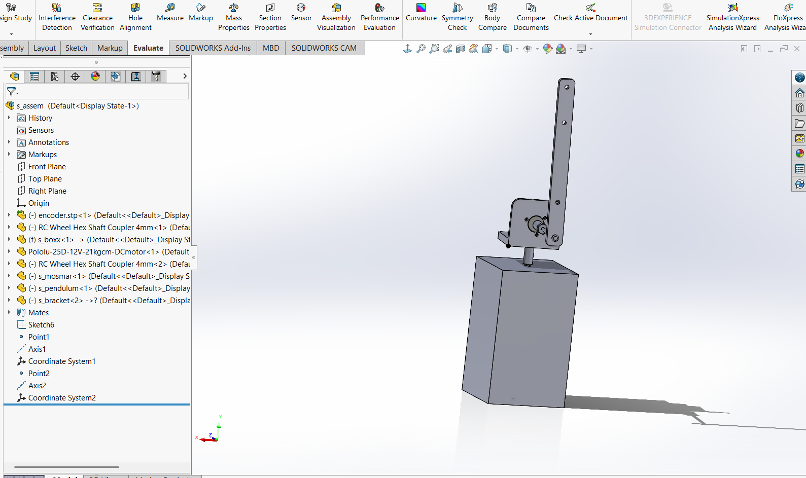
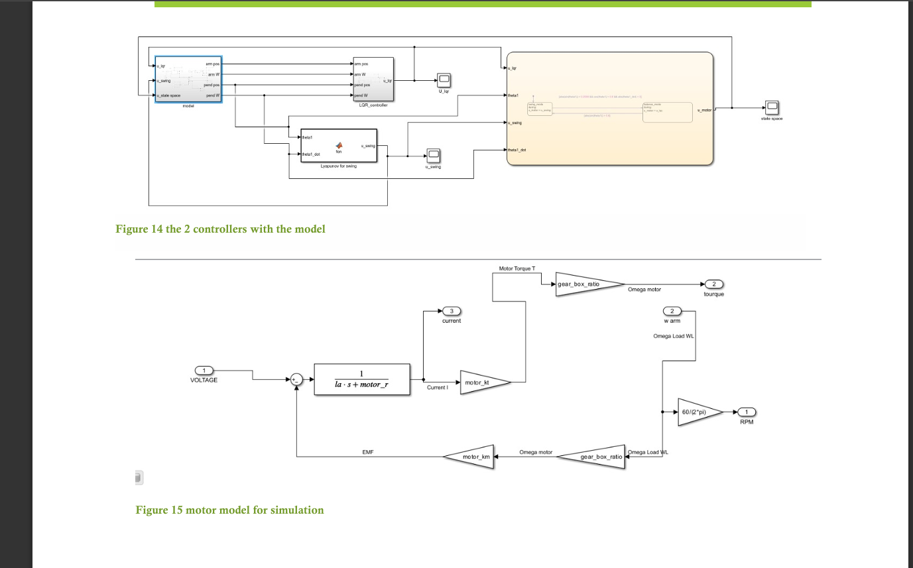
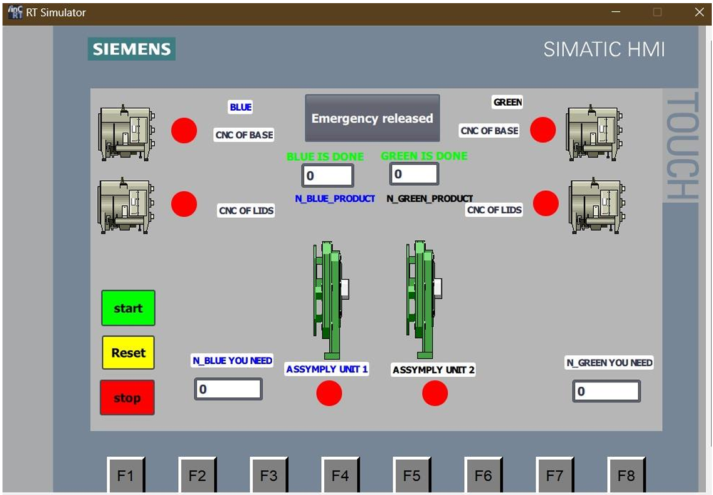
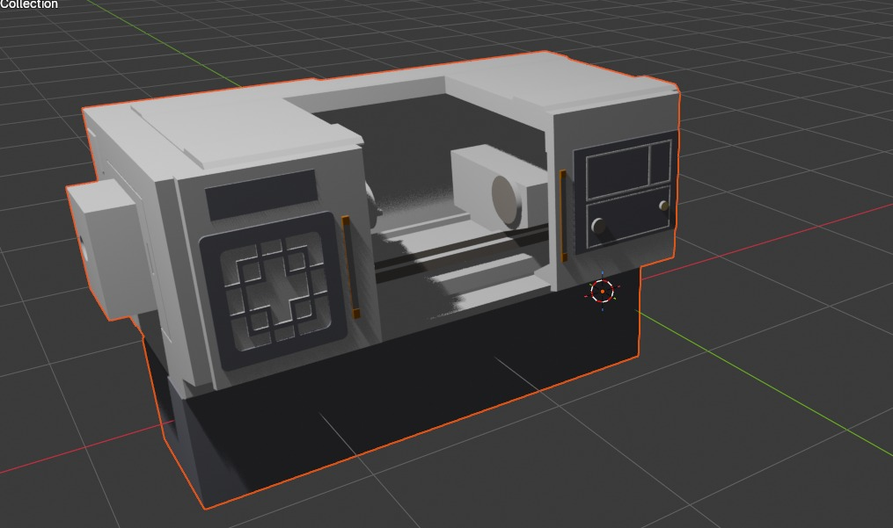